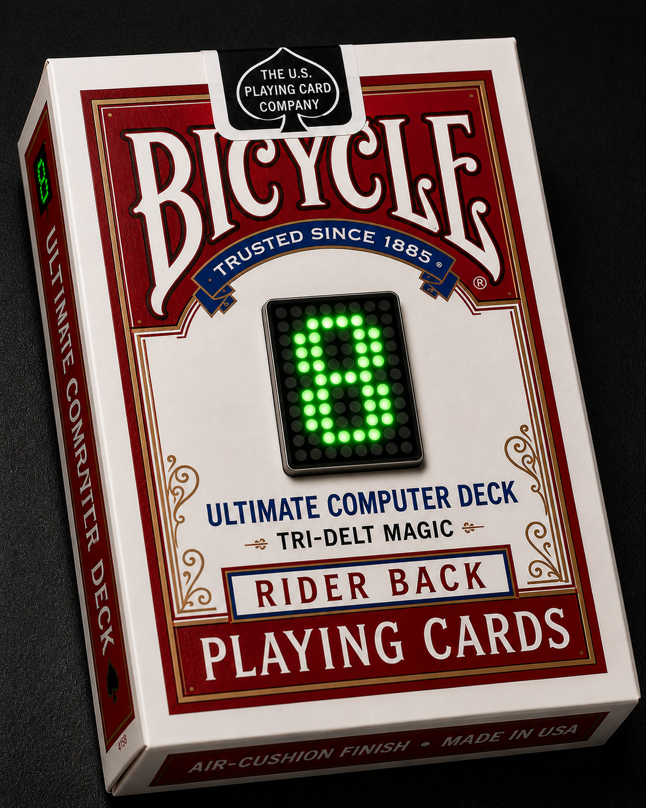

Ultimate Computer Deck
Firmware Updater
Use this page to update your Ultimate Computer Deck firmware directly from your browser.
Update Instructions
- Connect the Ultimate Computer Deck to your computer using USB.
- Use Chrome or Microsoft Edge.
- Click the install button below.
- Select the correct ESP32-C3 serial port.
- Wait for the update to complete before unplugging.
Do not disconnect the device while the firmware update is running.
